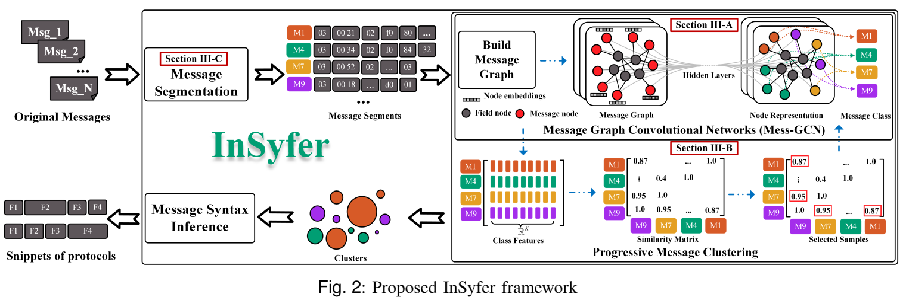

PUBLICATIONS
InSyfer: Industrial Control Protocols Syntax Inference via
Graph Representation Learning.
Daoqing Yang, Yu Yao, Yunfeng Wu.
Under Review. IEEE TRANSACTIONS ON INDUSTRIAL INFORMATICS (top). Oct. 2022
- Industrial Control Systems (ICSs) employ
many nonstandard and proprietary Industrial Control Protocols (ICPs) for communication. To infer the ICP specifications, Protocol Reverse Engineering (PRE) techniques
are commonly used by analyzing traffic traces. However,
conventional PRE methods face difficulties in reversing
ICPs, whose abstract data representation contains rich
structural features. We propose a new perspective for representing messages: graph, and design a novel framework
InSyfer, for protocol reverse analysis. Specifically, we build
a single message graph for traces and use graph convolutional networks for feature extraction, and optimize it jointly
with message clustering based on a progressive clustering
model designed by InSyfer, which achieves better message
type identification and greatly improves the correctness
of protocol format inference. Evaluations of four standard
ICPs demonstrate that InSyfer achieves better performance
compared with the state-of-the-art PRE methods.
-

-
What’s a Chunk? Pattern-Series-Based Semantics Analysis for Agnostic
Industrial Control Protocols.
Daoqing Yang, Yu Yao.
Submitted to USENIX Security Symposium(top). Jan. 2024
-
Reverse engineering of agnostic industrial control protocols
(ICPs) based on traffic traces is beneficial for the security
analysis of industrial control systems (ICSs). Field semantic
deduction is an essential step in protocol reverse engineering. Most existing methods rely on rule-based analysis for
specific fields of binary protocols, which require too many
assumptions and lack rules for the semantic analysis of ICPs.
In this paper, we propose a new concept, pattern series, and
design the first classification model to field semantic type
inference of unknown ICPs. Specifically, we first present the
definition of pattern series and design the field pattern series
extraction algorithm for generating training data, then build
a field semantic classification model based on deep learning
to extract the features of different field pattern series. Lastly,
we develop a probability-maximizing semantic type selection algorithm to obtain optimal semantic analysis results.
We show the performance and generalizability of our method
through experiments with three popular ICPs, including their
hybrid protocols. Evaluations show that our approach significantly outperforms the baseline method in field semantic type
recognition, achieving at least 90% F1.
-
Multivariate Time Series Anomaly Detection with
Inter-variable and Temporal Association Pattern.
Licheng Yang, Yu Yao, Yao Shan, Daoqing Yang.
Submitted to 2024 SIGKDD (top). Jan. 2024
- Multivariate time series anomaly detection has important research
value in industrial control systems (ICS), with multiple variables
and time series being the two significant features. In a real industrial production environment, abnormal points cannot accurately
build inter-variable and temporal association patterns. We propose
a new self-supervised method named Inter-variable and Temporal
transformer (ITformer), which models inter-variable and temporal
association and distinguishes abnormal points from normal points
through the association patterns of the Inter-variable and Temporal Attention modules. On the one hand, normal points can fuse
the temporal information of the whole series while maintaining
their own characteristics, while abnormal points do not. On the
other hand, from the perspective of the whole system, there is a
fixed inter-variable association pattern, and anomalies will destroy
this pattern. According to these facts, we propose a new anomaly criterion, that is, after establishing inter-variable and temporal
associations, respectively, the discrepancies of the two association patterns are integrated to judge whether the current point is
an anomaly. Subsequent experiments have shown that ITformer
achieves state-of-the-art results on multiple baseline datasets for
anomaly detection in time series.
-

-